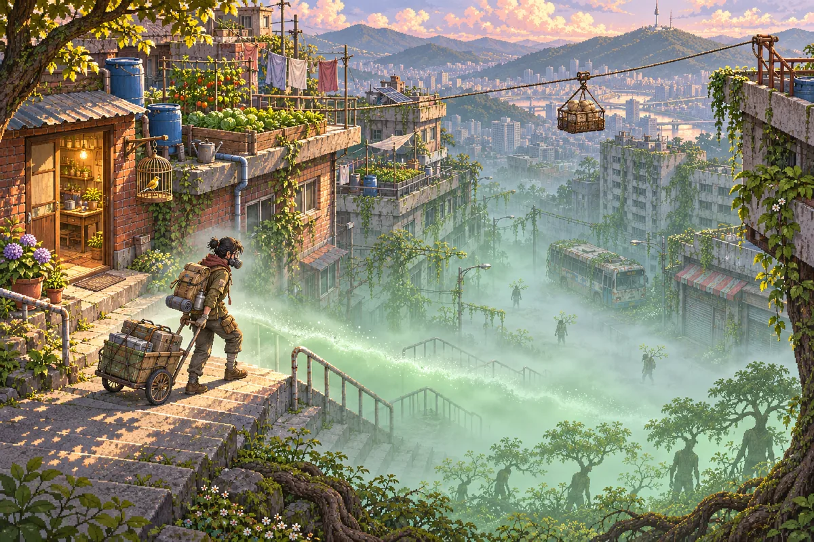

안개 아래에는 아직 통조림이 있다: 포스트 아포칼립스 생존 샌드박스 기획
레퍼런스: 소설, 영화, 만화와 애니메이션 28편 / 게임 제목은 정하지 않았다 / 기획의 수치는 전부 시제품에서 확인할 가설이다
열두 해 전, 낮은 땅에서 처음 보는 숲이 자랐다. 숲이 뿜는 포자는 안개처럼 낮은 곳에 고였고, 사람들은 산동네와 옥상으로 올라갔다. 아랫동네에는 그때 아무도 가져가지 못한 것들이 그대로 있다. 마스크를 쓰고 내려가서, 숨이 다하기 전에 올라온다.

이 글은 두 부분이다. 앞의 1절은 포스트 아포칼립스를 다룬 소설, 영화, 만화와 애니메이션을 조사한 것이다. 무엇이 끝났는지, 그 뒤의 세계가 어떤 규칙으로 굴러가는지를 보고 게임에 가져올 것을 골랐다. 뒤의 2~15절은 그것을 바탕으로 만든 세계와 게임의 기획이다. 틀은 프로젝트 좀보이드로 대표되는 쿼터뷰 생존 샌드박스다. 게임 제목은 정하지 않았다.
좁은 화면에서는 표를 좌우로 밀어 나머지 열을 볼 수 있다.
1. 레퍼런스 조사: 끝난 뒤의 세계는 어떻게 생겼나
작품을 원인별로 나누지 않고, 게임에 줄 수 있는 것에 따라 다섯 묶음으로 나눴다. 각 표의 마지막 열은 이 기획이 그 작품에서 눈여겨본 점이다.
① 위협에 규칙이 하나 있는 세계
| 작품 | 무엇이 끝났나 | 눈여겨본 것 |
|---|---|---|
| 트리피드의 날 존 윈덤, 소설, 1951 | 유성우를 본 사람들이 대부분 눈이 멀고, 걸어 다니는 식물이 사람을 덮친다. | 재난 하나에 위협 하나. 주인공은 텅 빈 도시에서 필요한 것을 마음대로 가져다 쓴다. 생존 샌드박스의 원형에 가깝다. |
| 나는 전설이다 리처드 매드슨, 소설, 1954 | 전염병으로 사람들이 흡혈귀처럼 변했다. | 낮에는 혼자 도시를 돌고 밤에는 집에 갇힌다. 하루가 둘로 나뉘는 구조. |
| 콰이어트 플레이스 영화, 2018 | 눈은 멀고 귀가 밝은 생물이 세상을 덮었다. | 규칙 하나가 생활 전체를 바꾼다. 맨발로 걷고, 길에 모래를 깔고, 손으로 말한다. |
| 버드 박스 영화, 2018 (원작 소설 2014) | 보면 안 되는 존재가 나타났다. | 감각 하나를 스스로 막고 사는 생활. 불편함이 곧 규칙이다. |
| 핀치 영화, 2021 | 태양 플레어로 오존층이 사라져 낮의 햇빛이 살을 태운다. | 괴물 없이 시간대가 위협이 된다. 방호복을 입고 물자를 구하러 나간다. |
② 바깥 공기를 마실 수 없는 세계
| 작품 | 무엇이 끝났나 | 눈여겨본 것 |
|---|---|---|
| 바람계곡의 나우시카 미야자키 하야오, 만화와 영화(1984) | 독을 뿜는 숲이 땅을 덮어 간다. 사람은 마스크 없이 숲에 들어가지 못한다. | 숲은 적이 아니었다. 오염된 땅을 숲이 맑게 하고 있었다. 위협이 뒤집히는 결말. |
| 메트로 2033 드미트리 글루홉스키, 소설, 2002 | 핵전쟁 뒤 모스크바 지하철에 사람들이 모여 산다. | 지상은 방독면을 쓰고 잠깐 다녀오는 곳이다. 여과통이 곧 남은 시간이다. |
| 울(사일로 연작) 휴 하위, 소설, 2011~ | 사람들이 땅속 깊은 사일로에서 대를 이어 산다. | 사는 곳이 위아래로 긴 구조물이다. 높이가 곧 사회의 지도다. |
| 지구 끝의 온실 김초엽, 소설, 2021 | 더스트라는 먼지가 세상을 덮었다. 사람들은 돔 도시로 모이고, 돔 밖의 마을은 온실에서 나온 식물로 버틴다. | 세상을 되돌린 것은 무기가 아니라 식물 하나였다. 심고 퍼뜨리는 일이 결말이 된다. |
| 노변의 피크닉(1972) 영화 스토커(1979) | 설명할 수 없는 '구역'이 생겼다. 규칙을 아는 안내인만 들어갔다 나온다. | 위험한 곳에 들어가 물건을 가지고 나오는 일이 직업이 된다. 구역은 규칙을 어긴 사람만 벌한다. |
③ 사람이 다른 것으로 변하는 세계
| 작품 | 무엇이 끝났나 | 눈여겨본 것 |
|---|---|---|
| 더 라스트 오브 어스 게임(2013)과 드라마 | 균류에 감염된 사람들이 세상을 무너뜨렸다. | 스무 해 뒤의 도시가 풀과 나무로 덮여 있다. 폐허가 초록색이다. |
| The Girl with All the Gifts M. R. 케리, 소설, 2014 | 균류 감염으로 인류 대부분이 사라졌다. 감염은 포자로도 퍼진다. | 감염된 쪽이 다음 세대가 될 수 있다는 관점. 끝이 한쪽의 시작이다. |
| 소멸의 땅(서던 리치 1부) 제프 밴더미어, 소설, 2014 | 사람이 살지 않는 X구역으로 열두 번째 탐사대가 들어간다. | 구역 안에서는 생태가 달라지고, 들어간 사람도 달라진다. 죽는 것보다 변하는 것이 무섭다. |
| 부산행 영화, 2016 | 고속열차 안에서 좀비 사태가 터진다. | 익숙한 한국의 공간이 무대가 될 때 설명이 줄어든다. |
④ 조용히 끝난 뒤의 일상
| 작품 | 무엇이 끝났나 | 눈여겨본 것 |
|---|---|---|
| Earth Abides 조지 R. 스튜어트, 소설, 1949 | 병으로 문명이 무너지고, 남은 사람들에게서 더 단순한 도구의 새 문화가 생긴다. | 남은 물건은 한 세대 동안 쓰이고 사라진다. 그다음은 직접 만드는 것뿐이다. |
| 스테이션 일레븐 에밀리 세인트존 맨델, 소설, 2014 | 독감이 세상을 무너뜨리고 스무 해가 지났다. 유랑 악단이 마을을 돌며 셰익스피어를 공연한다. | 마차에 적힌 말, "생존만으로는 부족하다". 쓸모없어진 옛 물건을 모아 둔 문명 박물관. |
| 요코하마 매물기행 아시나노 히토시, 만화, 1994~2006 | 생태가 무너진 뒤의 시대. 안드로이드가 찻집을 하며 산다. | 끝나 가는 세계가 평화롭다. 물에 잠긴 길과 조용한 저녁. |
| 소녀종말여행 츠쿠미즈, 만화(2014~2018)와 애니메이션(2017) | 두 소녀가 종말 뒤의 겨울을 여행한다. | 옛 물건이 무엇인지 모른 채 줍는다. 모르는 것을 알아 가는 일이 여행의 내용이다. |
| 월-E 애니메이션 영화, 2008 | 사람이 떠난 지구에서 로봇 하나가 쓰레기를 치운다. | 폐허에서 물건을 골라 모으는 일이 사랑스럽게 그려진다. 싹 하나가 이야기를 움직인다. |
⑤ 남은 사람들의 사회, 그리고 되살리기
| 작품 | 무엇이 끝났나 | 눈여겨본 것 |
|---|---|---|
| 로드 코맥 매카시, 소설, 2006 | 알 수 없는 재앙으로 거의 모든 생명이 사라졌다. 아버지와 아들이 걷는다. | 잿빛 세계의 끝. 가장 무서운 것은 다른 사람이다. 이 기획이 가지 않을 방향의 기준점이다. |
| 매드 맥스 2(1981) 분노의 도로(2015) | 황무지. 정착민과 약탈자가 연료를 두고 싸운다. | 자원 하나가 사회의 모양을 정한다. 탈것이 곧 집이고 무기다. |
| 설국열차 영화, 2013 | 얼어붙은 지구를 기차 한 대가 돈다. | 닫힌 공간 안의 계급. 칸의 순서가 사회의 순서다. |
| 콘크리트 유토피아 영화, 2023 | 대지진으로 서울이 무너지고 아파트 한 동만 남았다. | 한국의 아파트가 성이 된다. 안과 밖을 가르는 것은 주민이라는 자격이다. |
| 칠드런 오브 맨 영화, 2006 | 스무 해 동안 아이가 태어나지 않았다. | 세상이 한순간이 아니라 천천히 닫힌다. |
| 리보위츠를 위한 찬송 월터 M. 밀러 주니어, 소설, 1959 | 핵전쟁 뒤 수도원이 옛 과학의 조각을 수천 년 동안 지킨다. | 지식을 간직하는 일이 그 자체로 목표가 된다. |
| 미래소년 코난 애니메이션, 1978 | 큰 전쟁 뒤 바다에 잠긴 세계. | 끝난 세계가 모험의 무대다. 밝다. |
| 닥터 스톤 만화, 2017~2022 | 인류가 3,700년 동안 돌이 되어 있었다. | 불에서 전기까지, 문명을 단계별로 다시 만든다. 되살리기가 곧 진행도다. |
| 천국대마경 만화(2018~)와 애니메이션(2023) | 무너진 일본을 두 사람이 여행한다. | 폐허마다 작은 공동체가 저마다의 규칙으로 산다. |
조사에서 얻은 것 일곱 가지
- 오래 남는 세계는 규칙이 하나다. 소리를 내면 안 된다, 보면 안 된다, 낮에 나가면 안 된다. 규칙 하나가 걷는 법과 집 짓는 법까지 바꾼다. 이 기획의 규칙은 숨이다.
- 끝난 직후보다 몇 해 뒤가 더 포스트 아포칼립스답다. 스테이션 일레븐은 스무 해 뒤를, 리보위츠는 수백 년 뒤를 그린다. 사람들이 이미 적응해 있고, 옛 물건은 줄어 간다. 이 기획은 열두 해 뒤로 잡았다.
- 폐허는 잿빛보다 초록빛일 때 오래 기억된다. 나우시카, 더 라스트 오브 어스, 요코하마 매물기행의 폐허는 풀에 덮여 있다. 로드의 잿빛은 강렬하지만 그 안에서 오래 놀기는 어렵다.
- 죽는 것보다 변하는 것이 오래 남는다. 감염, 구역, 균류. 변한 사람은 사라지지 않고 세계에 남는다. 이 기획에서 끝은 죽음이 아니라 나무가 되는 것이다.
- 위험한 곳에 들어갔다 나오는 구조가 게임이 된다. 구역의 안내인, 지상에 다녀오는 메트로의 사람들, 숲에 들어가는 나우시카. 안전한 곳과 위험한 곳이 나뉘고 그 사이를 오간다.
- 살아남은 다음의 일이 있어야 한다. "생존만으로는 부족하다." 닥터 스톤은 다시 만들고, 지구 끝의 온실은 심고 퍼뜨린다. 생존 샌드박스가 후반에 심심해지는 문제의 답이 여기에 있다.
- 사람끼리의 싸움은 이번에 가져오지 않는다. 로드, 매드 맥스, 콘크리트 유토피아가 보여 주듯 이 장르의 큰 줄기다. 다만 만들 분량이 크고 분위기가 어두워진다. 이 기획의 다른 사람들은 장터에서 만나는 이웃으로만 둔다.
이런 계열을 가리키는 말도 하나 적어 둔다. 브라이언 올디스는 1973년에 윈덤의 소설 같은 영국식 재난물을 '안락한 재난(cosy catastrophe)'이라고 불렀다. 남들이 죽어 가는 동안 주인공은 빈 도시에서 꽤 잘 지낸다는 비꼬는 말이었다. 생존 샌드박스의 재미는 바로 그 비꼼이 가리키는 자리에 있다. 빈집의 문을 열고 필요한 것을 가져오는 일이다.
2. 틀과 세계관 후보
그대로 두는 것은 여섯 가지다. 쿼터뷰 타일 시점, 일시 정지와 배속이 있는 실시간, 집을 뒤지는 일, 먹고 자는 욕구 관리, 거점 꾸리기, 그리고 캐릭터 하나가 끝나면 그 캐릭터는 돌아오지 않는다는 것. 여기에 얹을 세계를 조사에서 넷 뽑았다.
| 후보 | 한 줄 | 기대는 작품 | 판단 |
|---|---|---|---|
| 안개 아래의 도시 | 포자 안개가 낮은 곳에 고인다. 높은 곳에 살고 낮은 곳으로 구하러 간다. | 나우시카, 메트로 2033, 지구 끝의 온실, 스토커 | 고름. 규칙 하나가 지도, 시간, 자원, 결말을 모두 움직인다. |
| 낮을 잃은 세계 | 햇빛이 살을 태운다. 밤에 움직이고 낮에 숨는다. | 핀치, 나는 전설이다 | 위협이 시계 하나뿐이라 무리의 자리가 빈다. |
| 큰 것이 지나가는 땅 | 산만 한 것이 정해진 길을 걷는다. 지나간 자리에 작은 것들이 떨어진다. | 나우시카의 벌레 떼, 거대 생물이 사는 구역을 그린 영화들 | 매력은 크지만 만들 분량이 가장 크다. |
| 스무 해 뒤의 고물 줍기 | 위협은 없다. 옛 물건을 줍고 문명을 다시 만든다. | 스테이션 일레븐, 닥터 스톤, 요코하마 매물기행 | 긴장이 약하다. 되살리기는 고른 세계의 후반 목표로 가져온다. |
3. 세계관: 안개 아래의 도시
열두 해 전, 강가와 낮은 땅에서 처음 보는 숲이 자라기 시작했다. 숲은 포자를 뿜고, 포자는 공기보다 무거워 낮은 곳에 안개처럼 고인다. 산으로 둘러싸인 분지 도시의 아랫동네는 안개에 잠겼고, 사람들은 산동네와 옥상으로 올라갔다. 안개 속에서 포자를 너무 마신 사람은 죽지 않는다. 말이 없어지고, 아래로 걸어 내려가, 가장 낮은 곳에서 나무가 된다. 플레이어는 윗동네에 사는 사람이다. 필요한 것을 구하러 안개 아래로 내려갔다 온다.
규칙 셋
- 안개는 낮은 곳에 고이고, 안개선은 날마다 오르내린다. 안개선 위에서는 마스크 없이 산다.
- 안개 속에서는 숨이 전부다. 숨이 찰수록 여과통이 빨리 닳고, 내려가는 사람들이 숨을 따라온다.
- 포자를 너무 마신 사람은 아래로 걸어 내려가 나무가 된다. 죽음은 없고, 끝은 이것 하나다.
왜 열두 해 뒤인가
- 윗동네는 이미 비었다. 안개 위의 가게와 집은 열두 해 동안 다 털렸다. 내려가야 할 이유가 처음부터 있다.
- 아랫동네는 그대로다. 안개 때문에 아무도 오래 머물지 못했다. 깊은 곳일수록 손을 덜 탔다.
- 옛 기계는 대부분 못 쓴다. 휘발유는 상했고 건전지는 귀하다. 자동차 대신 손수레, 자전거, 지붕 사이에 건 줄을 쓴다.
- 통조림은 아직 남았지만 해마다 준다. 줍는 살림에서 기르는 살림으로 넘어가야 한다.
- 사람들은 이미 적응했다. 윗동네에는 장이 서고, 안개를 읽는 법과 여과통을 채우는 법이 상식이다.
이 세계의 낱말 넷
새로 만든 말은 넷뿐이다. 안개선은 안개가 차 있는 높이다. 여과통은 마스크에 끼우는 소모품이다. 내려가는 사람은 포자를 너무 마셔 아래로 걷고 있는 사람이다. 선 나무는 그들이 바닥에서 뿌리를 내린 모습이다. 지명과 인명은 만들지 않았다.
4. 설계 기둥 네 가지
- ① 숨이 곧 시간이다뛰고 싸우고 무거운 것을 지면 숨이 찬다. 숨이 차면 여과통이 빨리 닳고 멀리서 들킨다. 급할수록 남은 시간이 준다.
- ② 깊을수록 좋은 것이 있다낮은 곳일수록 안개가 짙고, 손을 덜 탔다. 도시의 높이가 던전의 층이다. 얼마나 깊이 갈지를 매번 고른다.
- ③ 지도가 날마다 오르내린다안개선은 시간과 날씨와 철에 따라 움직인다. 어제 걸어서 간 골목이 오늘은 잠겨 있다. 하늘을 읽는 일이 계획의 시작이다.
- ④ 살아남은 다음에는 되찾는다숲은 해마다 조금씩 올라온다. 가만히 있으면 윗동네가 좁아진다. 포자를 먹는 풀을 심어 안개를 한 구역씩 밀어낸다.
5. 숨: 하나로 묶은 수치
생존 게임에는 보통 지구력, 소음, 소모품 수명이 따로 있다. 이 게임은 그 셋을 숨 하나로 묶는다. 숨에는 세 단계가 있다.
| 단계 | 이럴 때 | 여과통이 닳는 속도 | 들키는 거리 |
|---|---|---|---|
| 고른 숨 | 서 있기, 걷기, 가벼운 짐 | 1배 | 3칸 |
| 가쁜 숨 | 빠른 걸음, 무거운 짐, 오르막과 계단 | 2배 | 8칸 |
| 헐떡임 | 달리기, 싸움, 붙들렸을 때 | 4배 | 20칸 |
이 표에서 가장 중요한 줄은 오르막이다. 내려갈 때는 짐이 없고 길이 내리막이다. 돌아올 때는 짐이 있고 길이 오르막이다. 돌아오는 길이 언제나 더 숨차다. 그래서 여과통은 절반이 남았을 때 돌아서면 늦다.
숨을 고르는 법
- 멈춘다. 서서 쉬면 숨이 돌아온다. 쉬는 동안에도 여과통은 닳는다.
- 내려놓는다. 짐을 두고 가면 숨이 편하다. 숨겨 두고 다음에 가져온다.
- 맑은 방에 든다. 문틈을 막은 방에서는 안개가 옅다. 마스크를 벗고 숨을 돌린다. 아랫동네 곳곳에 맑은 방을 만들어 두는 것이 길을 닦는 일이다.
- 안개 위로 올라간다. 아랫동네의 높은 아파트는 꼭대기가 안개 위로 솟아 있다. 올라가는 계단이 숨차지만 위는 맑다.
여과통
| 종류 | 버티는 시간 | 구하는 곳 |
|---|---|---|
| 옛 여과통 | 4시간 | 아랫동네의 공장, 소방서, 병원 창고. 새로 만들 수 없다. |
| 다시 채운 여과통 | 2시간 | 빈 통에 숯과 솜을 채워 직접 만든다. 숯은 윗동네에서 굽는다. |
| 젖은 천 | 15분 | 급할 때. 포자를 조금 마시게 된다. |
새장도 장비다. 작은 새를 데리고 다니면 공기가 나빠질 때 새가 먼저 조용해진다. 맑은 방이 정말 맑은지, 안개선이 어디까지 올라왔는지를 새가 알려 준다.
숨 하나로 묶은 이유. 판단이 한 줄로 모인다. 뛸까 말까, 더 실을까 말까, 싸울까 말까가 모두 같은 질문이 된다. 지금 숨을 써도 되는가.
6. 안개선: 오르내리는 지도
도시는 분지다. 강이 흐르는 바닥을 0단, 산마루를 10단으로 센다. 한낮의 안개선은 보통 6단에 있다.
| 구역 | 높이 | 안개 | 남은 것 | 위험 |
|---|---|---|---|---|
| 윗동네 | 8~10단 | 없다 | 다 털렸다. 텃밭, 빗물, 장터가 있다. | 거의 없다. 안개가 오르는 밤만 조심한다. |
| 안개선 언저리 | 6~7단 | 아침저녁으로 잠긴다 | 조금 남았다. | 가끔 내려가는 사람이 지나간다. |
| 얕은 안개 | 4~5단 | 옅다 | 주택가, 동네 가게, 작은 약국. | 내려가는 사람. 풀에 덮인 길. |
| 깊은 안개 | 2~3단 | 짙다. 여과통이 1.5배로 닳고 어둡다 | 시장, 병원, 학교, 창고. | 내려가는 사람이 많다. 낡은 바닥이 꺼진다. |
| 바닥 | 0~1단 | 가장 짙다. 2배로 닳는다 | 역, 백화점, 공장, 강. | 선 나무의 숲. 뿌리가 길을 막는다. |
무엇이 안개선을 움직이나
- 하루. 새벽에 가장 높고(한 단 위) 한낮 볕에 가장 낮다(한 단 아래). 깊이 내려가 있기 좋은 때는 한낮이다.
- 비. 비가 포자를 씻어 내린다. 비 갠 뒤 반나절은 안개선이 두 단 내려간다. 평소 못 가던 곳에 갈 수 있는 날이다.
- 바람. 바람 센 날은 안개가 흩어져 옅어진다. 대신 골목마다 짙기가 달라 읽기 어렵다.
- 철. 봄은 포자 철이라 가장 높다. 겨울은 숲이 쉬어 가장 낮고, 내려가는 사람들도 느려진다. 겨울이 깊이 내려가는 철이다. 대신 춥고 해가 짧다.
안개가 오르는 밤
한 달에 한두 번, 따뜻하고 바람 없는 밤에 안개가 윗동네까지 올라온다. 내려가던 사람들이 안개와 함께 올라온다. 그날 저녁에는 문틈과 창틈을 막고, 새장을 머리맡에 두고, 여과통을 손 닿는 곳에 둔다. 저녁 하늘과 습기로 미리 짐작할 수 있고, 윗동네에서는 종을 쳐서 알린다.
7. 하루의 흐름: 내려갔다 올라온다
- 새벽안개가 높다. 텃밭을 돌보고, 숯을 굽고, 여과통을 채운다.
- 오전안개선이 내려가기 시작한다. 하늘을 보고 오늘의 깊이를 정해 출발한다.
- 한낮안개선이 가장 낮다. 가장 깊은 곳에 있어야 하는 시간이다.
- 오후돌아선다. 짐을 지고 오르막을 오른다. 숨을 아낀다.
- 해 질 녘안개선이 다시 오른다. 그 전에 선 위로 올라와야 한다.
- 밤가져온 것을 씻고 나눈다. 먹고, 고치고, 잔다.
10 | h A 8 | T @ h # # 6 |= = = T = = = = h h # # # # 4 |~ ~ ~ T ~ ~ h w # # # # # # 2 |~ ~ ~ T S H # # # # # # # # 0 |t M t T # # # # # # # # # #
- 얕은 안개의 주택가만 돌고 온다. 다시 채운 여과통 하나로 된다.
- 시장과 병원까지 간다. 여과통 둘이 필요하고, 돌아오는 오르막이 길다.
- 아파트 꼭대기까지 가서 하룻밤 잔다. 내일 한낮에 역까지 다녀온다.
- 저녁 하늘이 비를 말한다. 오늘은 쉬고, 비 갠 내일 깊이 간다.
8. 내려가는 사람들
포자를 너무 마신 사람들이다. 말이 없고 느리다. 낮은 쪽으로 걷는다. 몸에서 싹이 돋았고 둘레의 포자가 짙다. 사람을 해치려 하지 않는다. 다만 따뜻하고 축축한 날숨에 끌린다. 숨을 따라와서 붙든다. 붙들린 동안에는 짙은 포자 속에 있게 된다.
눈은 쓰지 않는다. 큰 소리가 나면 그쪽으로 돌아선다. 그리고 오르막을 오르지 않는다. 위층으로 피하면 따라오지 않고 아래에서 기다린다. 예외는 안개가 오르는 밤뿐이다.
| 모습 | 특징 | 다루는 법 |
|---|---|---|
| 내려가는 사람 | 기본. 걷는 사람보다 느리다. 둘레 2칸의 포자가 짙다. | 고른 숨으로 3칸 밖을 지나간다. |
| 갓 내려온 사람 | 아직 빠르다. 옷과 가방이 멀쩡하다. 얼마 전까지 윗동네 사람이었다. | 가방에 쓸 것이 있다. 가장 위험하고, 가장 마음이 쓰인다. |
| 싹이 많이 돋은 사람 | 아주 느리다. 둘레 4칸의 포자가 짙다. 건드리면 포자가 터진다. | 멀리 돌아간다. 좁은 골목에서 만나면 길을 바꾼다. |
| 멈춰 선 사람 | 뿌리를 내리기 직전이다. 길 한가운데 서 있다. 가까이에서 숨이 가쁘면 다시 걷는다. | 숨을 고르고 옆을 지난다. |
| 선 나무 | 움직이지 않는다. 포자가 여기서 나온다. 둘레의 안개가 짙다. | 벨 수 있다. 베면 그 둘레의 안개가 옅어진다. |
다루는 다섯 가지
- 비켜 가기. 가장 자주 쓴다. 천천히 걸으면 3칸 밖에서는 모른다.
- 숨 미끼. 따뜻한 김에 모인다. 작은 화로에 주전자를 올려 두면 그 둘레로 모인다. 그 사이에 지나간다.
- 밀치기. 장대로 밀어 거리를 번다. 숨이 조금 찬다.
- 문과 계단. 당겨 여는 문은 열지 못한다. 계단은 오르지 않는다. 건물의 구조가 방패다.
- 쓰러뜨리기. 연장으로 쓰러뜨릴 수 있다. 쓰러진 사람은 그 자리에 뿌리를 내린다. 며칠 뒤 그곳에 어린 나무가 서고 포자를 뿜는다.
싸움은 세 번 손해다. 싸우면 헐떡이게 되어 여과통이 4배로 닳는다. 20칸 안의 모두가 숨을 듣고 온다. 그리고 쓰러뜨린 자리에 나무가 선다. 자주 다니는 길목에서 싸우면 그 길이 점점 짙어진다.
그 밖의 위험은 도시가 낡아서 생긴다. 열두 해 동안 젖은 바닥이 꺼지고, 뿌리가 계단을 막고, 깊은 곳은 낮에도 어둡다. 안개 위에는 멧돼지와 들개가 있다.
9. 몸과 포자
배고픔, 목마름, 잠, 다침, 추위가 있다. 여기에 포자 수치가 있다. 안개 속에서 마스크 없이 숨 쉬거나, 여과통이 다 닳았거나, 내려가는 사람에게 붙들리면 오른다.
| 단계 | 수치 | 일어나는 일 |
|---|---|---|
| 맑음 | 0~19 | 없다. |
| 기침 | 20~49 | 숨이 쉽게 가빠진다. 기침 소리가 가끔 난다. |
| 말수가 줆 | 50~79 | 장터 사람들이 거리를 둔다. 자다가 일어나 아래쪽으로 몇 걸음 걷는다. |
| 내려감 | 100 | 조작을 떠나 아래로 걸어 내려간다. 그 캐릭터는 끝난다. |
수치는 맑은 공기 속에서 천천히 내려간다. 하루에 5쯤이다. 볕을 쬐고, 잘 먹고, 아랫동네 약국에 남은 흡입약을 쓰면 더 빨리 내려간다. 깊이 한 번 다녀오면 10에서 20이 오른다. 그래서 내려가는 날과 쉬는 날이 번갈아 온다. 쉬는 날은 텃밭과 수리와 장터의 날이다.
되돌릴 수 없는 감염은 두지 않는다. 한 번의 실수로 끝나지 않고, 쌓인 것을 덜어 낼 시간이 있느냐로 끝이 정해진다. 굶주림과 부상도 결국 여기로 모인다. 약해진 몸은 숨이 가쁘고, 가쁜 숨은 포자를 더 마신다.
10. 캐릭터: 두 세대와 여덟 직업
세대
먼저 세대를 고른다. 열두 해라는 시간이 여기서 쓰인다.
- 옛 세상을 아는 사람. 간판을 읽고, 약 이름을 알고, 기계의 쓰임을 안다. 아랫동네의 지리를 기억한다. 대신 숨이 짧다.
- 안개 뒤에 자란 사람. 숨이 길고 몸이 가볍다. 안개를 읽는 데 익숙하다. 대신 옛 물건의 쓰임을 모른다. 설명서를 읽거나 어른에게 물어야 쓸 수 있다.
직업
| 직업 | 잘하는 것 | 대가 |
|---|---|---|
| 고물꾼 | 많이 지고도 숨이 덜 찬다. 숨긴 짐을 잘 찾는다. | 포자 수치 30에서 시작한다. |
| 여과통장이 | 같은 숯으로 더 오래 가는 여과통을 채운다. | 내려가 본 적이 적다. 안개 속에서 쉽게 겁먹는다. |
| 줄꾼 | 지붕 사이에 줄을 놓는다. 높은 곳에서 숨이 차지 않는다. | 좁고 어두운 곳에 약하다. |
| 텃밭지기 | 소출이 많다. 맑은풀을 잘 살린다. | 무거운 짐에 약하다. |
| 새 치는 사람 | 새의 낌새를 숫자처럼 읽는다. 안개선을 정확히 안다. | 새를 먹여야 한다. 새가 죽으면 한동안 기운이 없다. |
| 간호사 | 약을 알아보고, 포자 수치를 빨리 내린다. 옛 세대만 고를 수 있다. | 병원에 대한 기억 때문에 깊은 안개에서 숨이 가빠진다. |
| 수리공 | 자전거, 손수레, 도르래, 옛 기계를 고친다. | 기름과 쇠 냄새가 배어 장터에서 값을 덜 받는다. |
| 하늘 보는 사람 | 내일의 안개선을 하루 먼저 안다. | 몸이 약하다. |
11. 윗동네 살림: 집, 줄, 섬, 장터
집
산동네의 집이나 건물 옥상이 거점이다. 빗물통, 옥상 텃밭, 숯 굽는 가마, 닭장을 둔다. 흙은 안개가 닿지 않은 맑은 흙이어야 한다. 안개가 오르는 밤에 대비해 문틈과 창틈을 막을 수 있어야 한다. 집이 높을수록 안전하고, 높을수록 아랫동네에서 멀다.
줄
지붕과 지붕 사이에 줄을 걸고 바구니를 매단다. 짐을 줄로 올리면 오르막에서 숨이 차지 않는다. 처음에는 집 앞 골목에 한 가닥, 나중에는 윗동네에서 아랫동네 아파트 꼭대기까지 잇는다. 줄이 한 가닥 늘 때마다 갈 수 있는 깊이가 늘어난다. 이 게임에서 영토를 넓힌다는 것은 줄을 아래로 뻗는 일이다.
섬
아랫동네의 높은 아파트는 꼭대기 몇 층이 안개 위로 솟아 있다. 안개의 바다에 뜬 섬이다. 맑은 방을 만들고, 여과통과 물을 쌓아 두고, 잠자리를 편다. 섬에서 하룻밤 자면 다음 날 한낮에 바닥까지 다녀올 수 있다. 어느 아파트를 섬으로 삼느냐가 그 판의 길을 정한다.
장터
산마루에 닷새마다 장이 선다. 다른 사람은 장터에만 있다. 통조림, 약, 연장, 책을 가져가면 숯, 씨앗, 여과통, 닭과 바꿀 수 있다. 벽보에는 부탁이 붙는다. 병원 3층의 무엇, 학교 과학실의 무엇. 부탁은 어디로 내려갈지 정해 주는 구실을 한다. 사람끼리의 싸움은 없다.
12. 시간표: 철마다, 해마다
한 철을 게임 속 14일, 한 해를 56일로 잡는다. 철은 안개선을 움직이고, 해는 도시를 낡게 한다.
철
- 봄, 포자 철. 안개선이 가장 높다. 윗동네의 아래쪽 집들이 잠긴다. 내려가기보다 지키는 철이다.
- 여름, 장마. 비와 비 갠 날이 번갈아 온다. 안개선이 크게 출렁인다. 읽는 만큼 얻는다.
- 가을. 가장 고르다. 텃밭을 거두고 겨울 채비를 한다.
- 겨울, 깊이 가는 철. 안개선이 가장 낮고 내려가는 사람들이 느리다. 바닥까지 갈 수 있다. 춥고, 해가 짧고, 얼어붙은 계단이 미끄럽다.
해마다 달라지는 것
- 통조림이 상한다. 해가 갈수록 따 보면 못 먹는 것이 는다. 줍는 것만으로는 살 수 없게 된다.
- 건물이 꺼진다. 깊은 곳부터 바닥과 계단이 무너진다. 갈 수 있던 곳이 막히고, 막혔던 곳이 뚫린다.
- 숲이 올라온다. 손대지 않으면 평균 안개선이 해마다 반 단씩 오른다. 윗동네가 조금씩 좁아진다.
세 번째가 이 게임의 긴 시계다. 잘 사는 것만으로는 제자리가 아니다. 13절의 되찾기가 이 시계에 맞서는 일이다.
13. 다회차 장치 열두 가지
네 층으로 나눈다. 한 번의 내려가기, 한 캐릭터의 삶, 캐릭터를 넘어 남는 도시, 그리고 새 도시다.
| 층 | 장치 | 무엇이 달라지나 |
|---|---|---|
| 한 번의 내려가기 | ① 그날의 안개선 | 같은 동네라도 날에 따라 갈 수 있는 깊이가 다르다. 비 갠 날은 다른 지도다. |
| ② 숨의 셈 | 짐, 오르막, 여과통. 매번 다른 계산이 나온다. 하나 더 넣을지 말지가 매번의 도박이다. | |
| ③ 길 닦기 | 맑은 방, 숨긴 짐, 줄. 지난번에 해 둔 일이 이번의 길이 된다. | |
| 한 캐릭터 | ④ 포자의 예산 | 깊이 다녀오면 쉬어야 한다. 무리해서 연달아 갈지, 며칠 쉴지를 고른다. |
| ⑤ 세대와 직업 | 옛 세상을 아는 간호사와 안개 뒤에 자란 줄꾼은 같은 도시를 다르게 겪는다. | |
| ⑥ 장터의 부탁 | 닷새마다 새 부탁이 붙는다. 평소 안 가던 곳으로 가게 만든다. | |
| 남는 도시 | ⑦ 이어 살기 | 캐릭터가 내려가도 도시는 남는다. 윗동네의 다른 사람으로 잇는다. 닦아 둔 길과 줄과 섬이 그대로 있다. |
| ⑧ 되찾기 | 포자를 먹는 풀을 심어 안개를 한 구역씩 밀어낸다. 되찾은 땅이 지도에 칠해진다. | |
| ⑨ 낡는 도시 | 해마다 통조림이 줄고 건물이 꺼진다. 첫해의 방식이 셋째 해에는 통하지 않는다. | |
| 새 도시 | ⑩ 분지의 모양 | 깊고 좁은 분지, 넓고 얕은 분지, 강이 가로지르는 분지, 언덕이 섬처럼 흩어진 분지. 높이의 분포가 길과 난이도를 정한다. |
| ⑪ 시작 사정 | 봄의 포자 철에 시작, 여과통 없이 시작, 장터가 없는 외딴 산마루, 아랫동네 아파트 꼭대기에서 혼자. | |
| ⑫ 설정판 | 안개선이 출렁이는 폭, 숲이 오르는 속도, 내려가는 사람의 수, 포자가 빠지는 속도, 통조림의 수명. |
이어 살기를 조금 더
내려간 앞사람은 사라지지 않는다. 내려가는 사람이 되어 아랫동네 어딘가를 걷고 있다. 메고 있던 가방과 차고 있던 연장도 그대로다. 다음 캐릭터가 그 사람을 만날 수 있다. 시간이 더 지나면 바닥에서 나무가 되어 서 있다. 그 나무를 벨지 둘지는 플레이어가 정한다.
되찾기를 조금 더
깊은 곳의 연구소나 온실 어딘가에 포자를 먹고 자라는 풀이 남아 있다. 이 글에서는 맑은풀이라고 부른다. 찾아서 윗동네로 가져와 늘린다. 안개선 바로 아래에 심으면 그 둘레의 안개가 옅어지고, 자리를 잡으면 그 구역의 안개선이 내려간다. 선 나무가 가까이 있으면 풀이 자라지 못한다. 그래서 되찾기는 세 가지 일의 반복이다. 나무를 베거나 피하고, 풀을 심고, 풀이 자리 잡을 때까지 돌본다.
되찾은 구역은 맑은 땅이 된다. 텃밭을 넓히고, 집을 옮기고, 줄을 더 아래로 뻗는다. 숲은 해마다 올라오고 풀은 구역마다 밀어낸다. 이 줄다리기가 끝없는 샌드박스의 후반을 채운다. 분지 전체를 되찾는 것은 아주 먼 목표로 둔다.
해금의 원칙
판을 거듭해도 캐릭터가 강해지지 않는다. 남는 것은 그 도시에 해 둔 일과 플레이어가 배운 것이다. 새로 열리는 것은 직업, 시작 사정, 분지의 모양이다.
14. 화면과 그래픽
- 시점. 쿼터뷰 타일. 비탈과 계단으로 높이를 보여 준다. 건물 안은 지붕을 걷어 보인다.
- 두 가지 색. 안개 위는 볕이 드는 초록과 빨래와 텃밭의 색이다. 안개 아래는 청록과 젖빛이다. 잿빛 폐허로 그리지 않는다.
- 안개. 안개선 아래의 타일을 반투명한 층이 덮는다. 깊을수록 짙고, 시야가 좁아진다. 안개선이 움직이는 것이 눈에 보인다.
- 숨의 표시. 화면 구석에 숨의 물결이 있다. 고르면 느리게, 가쁘면 빠르게 움직인다. 그 옆에 여과통의 남은 양, 지금 높이와 안개선이 있다.
- 소리. 마스크 속의 내 숨소리가 가장 가까운 소리다. 숨소리만으로 지금 단계를 안다. 새가 조용해지는 것도 소리로 안다.
- 내려가는 사람. 사람의 모습에 싹과 잎이 돋은 정도로 그린다. 징그럽게 그리지 않는다. 쓸쓸해 보이게 그린다.
15. 범위, 검증 순서, 남은 결정
만드는 순서
- 비탈 하나와 집 열 채. 안개선과 숨, 여과통만 넣는다. 돌아오는 오르막에서 손에 땀이 나는지 본다.
- 내려가는 사람과 숨 미끼, 문과 계단. 싸우지 않고 지나가는 일이 재미있는지 본다.
- 하루와 날씨에 따른 안개선의 움직임. 하늘을 보고 계획을 바꾸게 되는지 본다.
- 포자 수치와 쉬는 날, 윗동네 살림. 내려가는 날과 쉬는 날의 리듬이 생기는지 본다.
- 줄과 섬, 이어 살기, 되찾기.
확인할 가설
- 숨 하나로 묶은 수치가 단순하게 느껴지지 않고 깊게 느껴진다.
- 움직이는 안개선이 불편이 아니라 계획의 재미가 된다. 미리 읽을 단서가 충분해야 한다.
- 쓰러뜨리면 나무가 선다는 규칙이 싸움을 피하게 만들되, 싸움을 없애지는 않는다.
- 높이가 있는 지도를 쿼터뷰에서 읽을 수 있다. 안개선이 어디인지 한눈에 보여야 한다.
- 되찾기가 후반의 목표로 충분하다.
넣지 않는 것
- 총과 폭발물
- 사람끼리의 싸움과 약탈
- 움직이는 자동차
- 되돌릴 수 없는 한 번의 감염
- 판을 넘겨 쌓이는 능력치
- 숲이 어디서 왔는지에 대한 설명
남은 결정
- 게임 제목.
- 선 나무를 베는 일을 얼마나 무겁게 다룰지. 내려간 사람을 되돌릴 방법을 둘지와 함께 정해야 한다.
- 나우시카의 결말처럼 숲의 뜻이 뒤집히는 이야기를 둘지. 두면 되찾기의 의미가 달라진다.
- 장터의 사람들을 어디까지 그릴지. 이름과 사연을 주면 세계가 살지만 분량이 는다.
- 한 해의 길이, 그리고 여럿이 같이 하는 판에서 숨을 어떻게 나눌지.
16. 출처와 확인 범위
1절 표의 작가, 발표 연도, 줄거리 한 줄은 2026-11-18에 위키백과 각 항목의 머리글을 읽고 맞춘 것이다. 아래에 묶어서 적는다.
- 소설: The Day of the Triffids, I Am Legend, Earth Abides, A Canticle for Leibowitz, Roadside Picnic, Metro 2033, The Road, Silo, Station Eleven, The Girl with All the Gifts, Annihilation.
- 영화: Stalker, Mad Max 2, Mad Max: Fury Road, Children of Men, WALL-E, Snowpiercer, Train to Busan, A Quiet Place, Bird Box, Finch, Concrete Utopia.
- 만화와 애니메이션: Nausicaä of the Valley of the Wind, Future Boy Conan, Yokohama Kaidashi Kikou, Girls' Last Tour, Dr. Stone, Heavenly Delusion, The Last of Us.
- The Encyclopedia of Science Fiction: Cosy Catastrophe — 올디스가 1973년 책에서 이 말을 썼다는 것과 그 뜻. 검색 요약으로 확인했다.
- 왓챠피디아: 지구 끝의 온실 — 더스트, 돔 시티, 프림 빌리지, 온실의 식물학자, 목차. 검색 요약으로 확인했다.
- LitCharts: Station Eleven — 스무 해 뒤, 유랑 악단, 마차의 문구, 문명 박물관. 검색 요약으로 확인했다.
확인하지 못한 것도 적어 둔다. 지구 끝의 온실의 출간 연도, 나우시카 영화의 개봉 연도, 더 라스트 오브 어스의 게임 출시 연도는 기억대로 적었다. 나는 전설이다의 낮과 밤, 버드 박스와 설국열차와 사일로의 줄거리, 메트로의 여과통, 소녀종말여행의 세부처럼 표의 '눈여겨본 것' 열에 적은 감상은 작품을 본 기억에 기댄 것이고 원문과 대조하지 않았다. 나우시카의 숲이 땅을 맑게 한다는 것과 핀치의 설정은 검색 요약에서 확인했다. 올디스의 말은 직접 인용이 아니라 뜻을 옮긴 것이다.